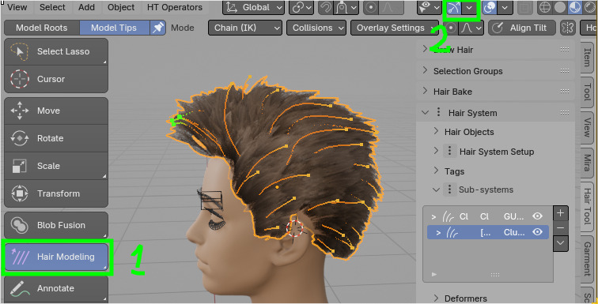
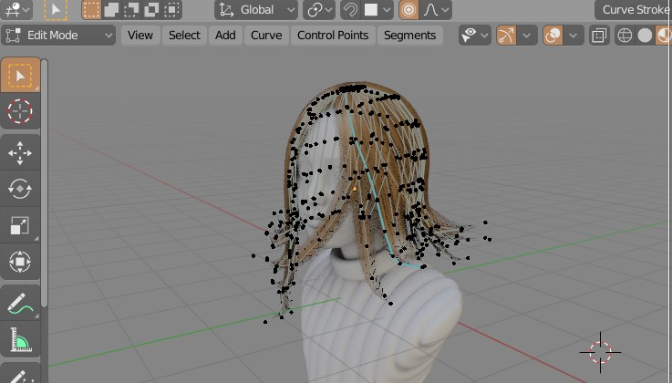

Hair Modeling¶
'Hair Modeling' button is located in 3d view -> left toolbar.

You can model hair curves, in natural way, using 'Chain' mode in which you move hair endings, while preserving hair curve length. Or you can 'Normal' mode where you adjust selection with proportional editing.
There are also some basic helper tools:
- duplicate splines
- delete/cut splines
- deform splines using Linear Deformer
- adjust tilt and taper
On of the reasons for this tool being located in object mode, is to avoid default messy drawing of points, when modeling splines in edit mode: 
Hotkeys¶
Note: Switching to Hair Modeling Tool will override some default blender 3d view shorcuts. To select other objects use Ctrl+RMB In round brackets I marked optional modifier keys eg. (Alt).
| Hotkey | Function |
|---|---|
| Ctrl+MWheel | Offset selection |
| (Shift)+RMB | Select Points |
| (Alt)+A | (de)Select All |
| (Alt)+B+LMB | Box (de)Select |
| (Alt)+C | Circle (de)Select |
| Ctrl+I | Invert Selection |
| G, R, S | Transform spline |
| Ctr+(Alt)+LMB | Lasso (de)Select |
| X, Del | Delete Selected |
| Ctrl+D | Linear Deformer |
| Shift+D | Duplicate strands |
| Alt+S | Adjust Radius |
| Alt+R | Reset Radius |
| Ctrl+T | Adjust Tilt |
| Alt+T | Reset Tilt |
Offset selection¶
Ctrl + MMB scroll - changes which point along the strand length can be selected
Linear Deformer¶
Ctrl+D - rotate, bend, scale, move selected curves using on screen gizmo (special thanks to Mira Tools developer for letting me include modified version of his tool in HTool)
Extend¶
E - adjust length of selected strands
Duplicate and Delete¶
Shift+D - duplicate; X or Del delete selected strands
Knife¶
K - cut selected strands. Define cut line using LMB (first to mark start point, then next LMB click to mark end point)